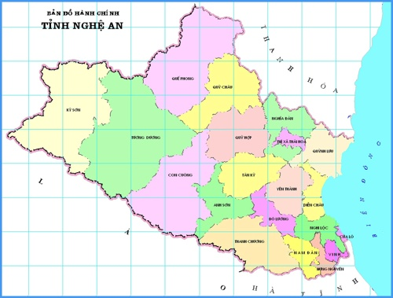

Đậu Cao Minh Nhật
ngày tháng năm sinh:18/10/2003
Điện thoại: 0976669010
quê quán: an hòa quỳnh lưu nghệ an
Email: daucaominhnhat@gmail.com
nghề nghiệp: sinh viên
Giới thiệu quê hương
I. Giới thiệu chung Nghệ An là tỉnh nằm ở vị trí trung tâm vùng Bắc Trung Bộ, là địa phương có lịch sử hình thành và phát triển lâu đời, giàu truyền thống cách mạng và tinh thần hiếu học. Nghệ An còn là mảnh đất đã sản sinh nhiều anh hùng, hào kiệt, danh tướng, danh nhân lịch sử cho đất nước. Đặc biệt, Nghệ An là quê hương của Chủ tịch Hồ Chí Minh, vị lãnh tụ vĩ đại của dân tộc Việt Nam, anh hùng giải phóng dân tộc, danh nhân văn hóa thế giới. Anh-tin-bai Danh xưng Nghệ An xuất hiện lần đầu tiên vào năm 1030 dưới triều Vua Lý Thái Tông khi nhà vua cho đổi tên gọi Hoan Châu thành châu Nghệ An. Từ đó, danh xưng Nghệ An trở thành tên gọi gần gũi, thân thương gắn liền vào lịch sử hào hùng của dân tộc và tồn tại sâu thẳm trong tâm thức các thế hệ người dân Nghệ An cho tới ngày nay. Tháng 11/2020, Nghệ An đã tổ chức trọng thể Lễ kỷ niệm 990 năm Danh xưng Nghệ An; khẳng định một dấu mốc quan trọng, một chặng đường lịch sử vẻ vang của địa phương. II. Vị trí địa lý, đặc điểm tự nhiên 1. Vị trí địa lý Nghệ An là địa phương nằm ở vĩ độ 18033' đến 20001' vĩ độ Bắc, kinh độ 103052' đến 105048' kinh độ Đông, ở vị trí trung tâm vùng Bắc Trung Bộ của Việt Nam; phía Đông giáp biển, phía Nam giáp tỉnh Hà Tĩnh, phía Bắc giáp tỉnh Thanh Hóa, phía Tây giáp nước Cộng hòa dân chủ nhân dân Lào với 468 km đường biên giới trên bộ, bờ biển ở phía Đông dài 82 km. Nghệ An có 21 đơn vị hành chính trực thuộc, bao gồm: 01 thành phố, 3 thị xã và 17 huyện. Trong đó, Thành phố Vinh là đô thị loại 1, là trung tâm kinh tế, văn hóa của tỉnh và khu vực Bắc Trung bộ; 3 thị xã, gồm: Thị xã Cửa Lò, thị xã Hoàng Mai và thị xã Thái Hoà; 17 huyện, gồm: Diễn Châu, Quỳnh Lưu, Yên Thành, Đô Lương, Nghi Lộc, Hưng Nguyên, Nam Đàn, Thanh Chương, Tân Kỳ, Anh Sơn, Con Cuông, Nghĩa Đàn, Quỳ Hợp, Quỳ Châu, Quế Phong, Tương Dương, Kỳ Sơn. Nghệ An nằm trong hành lang kinh tế Đông - Tây nối liền Myanmar - Thái Lan - Lào - Việt Nam theo Quốc lộ 7 đến cảng Cửa Lò; nằm trên các tuyến du lịch quốc gia và quốc tế (tuyến du lịch xuyên Việt; tuyến du lịch Vinh - Cánh đồng Chum - Luôngprabang - Viêng Chăn - Băng Cốc và ngược lại qua Quốc lộ 7 và đường 8)… Với vị trí như vậy, Nghệ An đóng vai trò quan trọng trong giao lưu kinh tế, thương mại, du lịch, vận chuyển hàng hoá với cả nước và các nước khác trong khu vực, nhất là các nước Lào, Thái Lan và Trung Quốc, là điều kiện thuận lợi để kêu gọi đầu tư phát triển kinh tế - xã hội. 2. Dân cư Theo Niên giám thống kê năm 2020, dân số tỉnh Nghệ An đến năm 2020 là 3.365.198 người, chủ yếu sinh sống ở khu vực nông thôn (với 84,5%). Mật độ dân số 204 người/km². Dân số vùng dân tộc thiểu số và miền núi sinh sống ở tỉnh Nghệ An trên 1,2 triệu người (chiếm 36% dân số toàn tỉnh). Đồng bào dân tộc thiểu số là 491.267 người, chiếm 14,76% dân số toàn tỉnh và chiếm 40,93% dân số trên địa bàn miền núi. Nghệ An hiện có 47 dân tộc cùng sinh sống, trong đó dân tộc thiểu số chiếm tỷ lệ cao là: Thái (338.559 người), Thổ (71.420 người), Khơ Mú (43.139 người), Mông (33.957 người). 3. Địa hình Tỉnh Nghệ An nằm ở Đông Bắc dãy Trường Sơn, có địa hình đa dạng, phức tạp, bị chia cắt mạnh bởi các dãy đồi núi và hệ thống sông, suối. Về tổng thể, địa hình tỉnh Nghệ An nghiêng theo hướng Tây Bắc - Đông Nam, với ba vùng sinh thái rõ rệt: miền núi, trung du, đồng bằng ven biển. Trong đó, miền núi chiếm tới 83% diện tích lãnh thổ. Địa hình có độ dốc lớn, đất có độ dốc lớn hơn 8° chiếm gần 80% diện tích tự nhiên toàn tỉnh, đặc biệt có trên 38% diện tích đất có độ dốc lớn hơn 25°. Nơi cao nhất là đỉnh Puxailaileng (2.711m) ở huyện Kỳ Sơn, thấp nhất là vùng đồng bằng các huyện Quỳnh Lưu, Diễn Châu, Yên Thành, có nơi chỉ cao 0,2m so với mặt nước biển (xã Quỳnh Thanh, huyện Quỳnh Lưu). 4. Khí hậu Nghệ An nằm trong vùng khí hậu nhiệt đới gió mùa, có 2 mùa rõ rệt là hè và đông. Từ tháng 4 đến tháng 8 dương lịch hàng năm, Nghệ An chịu ảnh hưởng của gió phơn tây nam khô và nóng. Vào mùa đông, chịu ảnh hưởng của gió mùa đông bắc lạnh và ẩm ướt. Nhiệt độ trung bình hàng năm từ 23 - 24°C. Sự chênh lệch nhiệt độ giữa các tháng trong năm khá cao. Nhiệt độ trung bình các tháng nóng nhất (tháng 6 đến tháng 7) là 33°C, nhiệt độ cao tuyệt đối 42,7°C; nhiệt độ trung bình các tháng lạnh nhất (tháng 12 năm trước đến tháng 2 năm sau) là 19°C, nhiệt độ thấp tuyệt đối -0,5°C. Số giờ nắng trung bình/năm là 1.500 - 1.700 giờ. Lượng mưa bình quân hàng năm dao động từ 1.200 - 2.000 mm/năm.
 Facebook
Facebook html
html